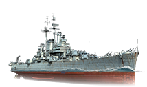

美國線 戰列艦
優點:
t8以後有長時間雷達，能對驅逐艦造成極大壓力，優秀的AP往往能對疏忽的對手造成重創，T6以上有最強防空，讓飛機不敢靠近
缺點:
炮線極差，使得有效進攻距離很短，沒有魚雷被戰列艦強推沒有辦法阻止，裝甲薄弱，一不小心就會損失大量血量
| 戰列艦
|
|---|
| 階級 | 船名 | 船身圖 | 存活性 | 火炮 | 對空防禦 | 機動性 | 隱蔽性
|
|---|
| III | ST.LOUIS |  | 血量39500
裝甲6-103 | 主砲 14*1 153mm
裝填時間:8秒
180度迴轉:33.5秒
主砲射程:11.3k | 無 | 最高航速:33.0節
迴轉半徑:450m
換舵速度:8.4秒 | 海上偵測:11.0km
空中偵測:6.3km
|
|---|
| IV | PHOENIX |  | 血量34000
裝甲6-76 | 主砲 8*1 153mm
裝填時間:8秒
180度迴轉:33.5秒
主砲射程:13.9k | 無 | 最高航速:35.0節
迴轉半徑:630m
換舵速度:7.0秒 | 海上偵測:13.1km
空中偵測:6.7km
|
|---|
| V | OMAHA | | 血量36800
裝甲10-76 | 主砲 8*1 153mm
裝填時間:7秒
180度迴轉:34.0秒
主砲射程:13.8k | 內圈秒傷:11
最高航速:34.0節
迴轉半徑:600m
換舵速度:7.5秒 | 海上偵測:13.5km
空中偵測:6.7km
| | VI | CLECELAND | | 血量35300
裝甲13-137 | 主砲 4*3 153mm
裝填時間:8秒
180度迴轉:33.7秒
主砲射程:13.3k | 內圈秒傷:67
中圈秒傷:91 | 最高航速:33.5節
迴轉半徑:660m
換舵速度:9.3秒 | 海上偵測:13.3km
空中偵測:8.1km
|
|---|
| VII | PENSACOLA | | 血量34300
裝甲16-103 | 主砲 5*3 303mm
裝填時間:15秒
180度迴轉:30.0秒
主砲射程:14.3k | 內圈秒傷:151
中圈秒傷:58 | 最高航速:33.5節
迴轉半徑:630m
換舵速度:9.1秒 | 海上偵測:13.8km
空中偵測:7.8km
|
|---|
| VIII | NEW ORLEANS | | 血量35400
裝甲13-137 | 主砲 3*3 303mm
裝填時間:15秒
180度迴轉:30.0秒
主砲射程:14.7k | 內圈秒傷:335
中圈秒傷:58 | 最高航速:33.5節
迴轉半徑:550m
換舵速度:9.0秒 | 海上偵測:13.4km
空中偵測:7.5km
|
|---|
| IX | BALTIMORE | | 血量43700
裝甲35-153 | 主砲 3*3 303mm
裝填時間:15秒
180度迴轉:30.0秒
主砲射程:14.4k | 內圈秒傷:374
中圈秒傷:91 | 最高航速:33.5節
迴轉半徑:730m
換舵速度:10.3秒 | 海上偵測:13.6km
空中偵測:9.1km
|
|---|
| X | DES MOINES |  | 血量50600
裝甲35-153 | 主砲 3*3 303mm
裝填時間:5.5秒
180度迴轉:30.0秒
主砲射程:15.8k | 內圈秒傷:43
中圈秒傷:403 | 最高航速:33.0節
迴轉半徑:770m
換舵速度:8.6秒 | 海上偵測:13.9km
空中偵測:9.9km
|
|---|
|
|---|